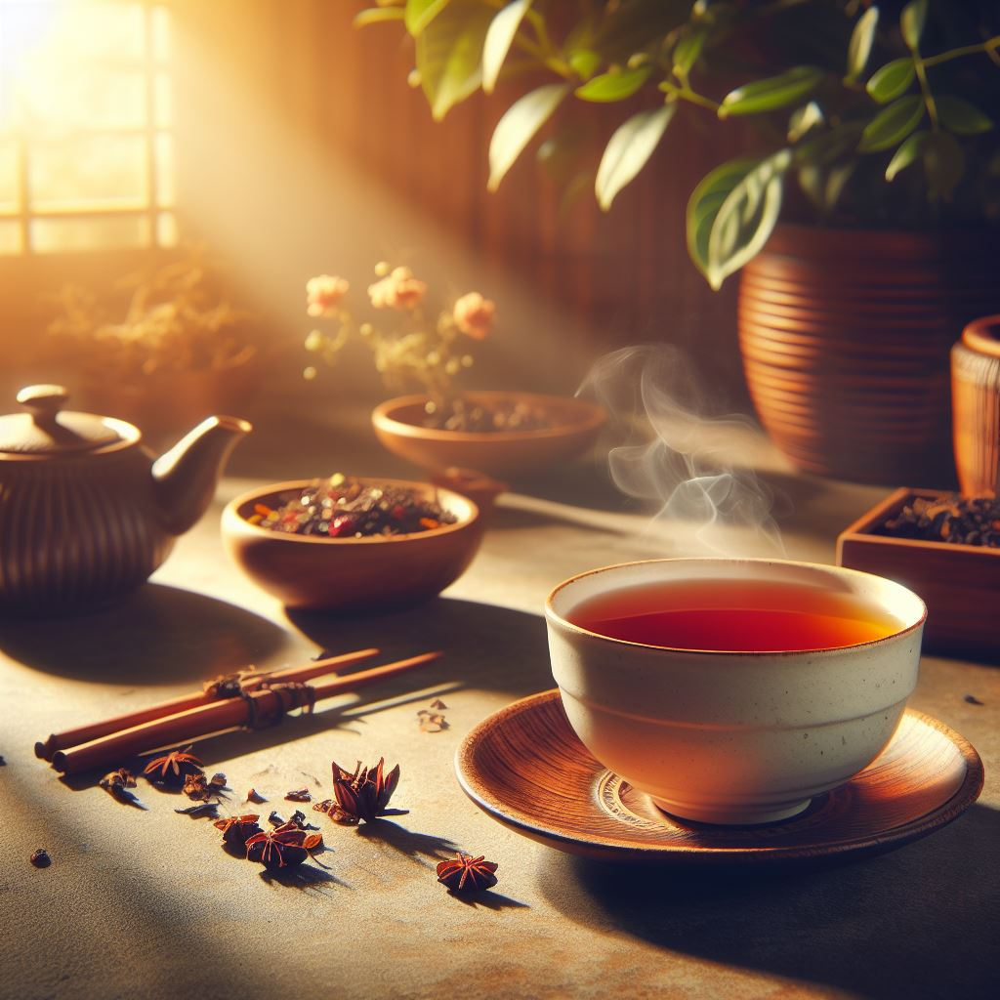

Description: Enjoy the rich flavors and aromas of tea that have been cherished for
centuries.
Benefits of Tea Drinking
Tea is not only a delightful beverage but also offers various health benefits, including antioxidants,
improved digestion, and relaxation.
Tea Recipe
Ingredients:
- Tea leaves or tea bags
- Hot water
- Optional: Sweeteners, milk, or herbs for flavor
Steps:
- Boil water to the desired temperature.
- Place tea leaves or tea bags in a teapot or mug.
- Pour hot water over the tea leaves or tea bags and steep for the recommended time. Add sweeteners or
flavorings if desired.